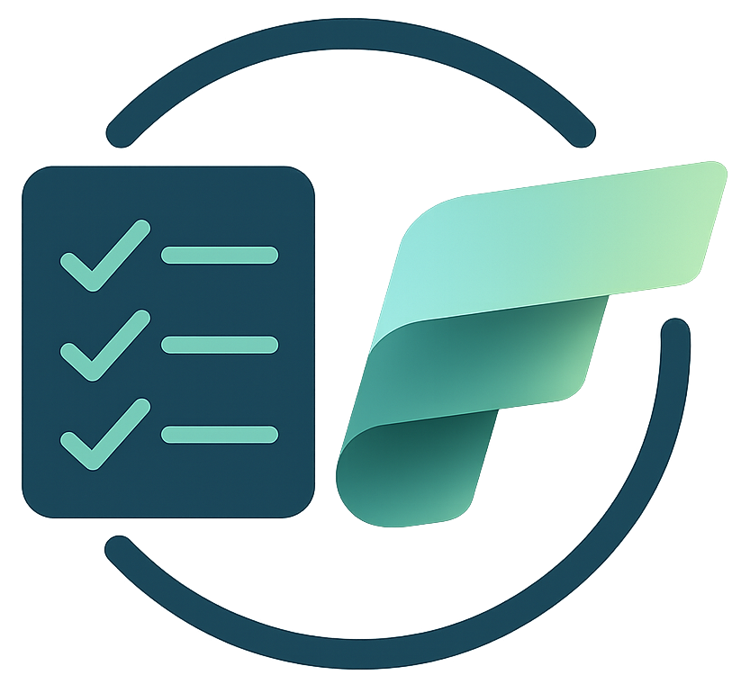

Select the type of Fabric item to provision.
Do you want to create a new workspace or reuse an existing one?
If you are creating a new workspace, do you want to assign it to a specific Fabric capacity?
Configure the Data Agent that will be created in your workspace.
Do you want to grant the Admin role to a user on this workspace?
Review your settings before triggering the deployment.